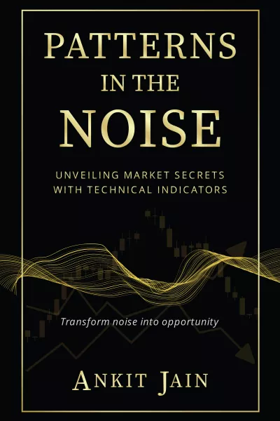

The stock market is full of noise: fast-moving charts, conflicting opinions and endless data. Hidden in that noise are patterns, if you know where to look.
Patterns in the Noise is a beginner-friendly guide to the most widely used technical indicators. It's for anyone new to trading or tired of blindly following tips.
No hype. No heavy jargon. Written by a passionate learner, not a market guru.
Each chapter covers: the terminology · calculations · parameters · interpretation · charting · best practices · common mistakes · quick checklist · pro tips · practice.
Trading journal templates, indicator cheat sheets and coloured sample charts. Free to download.
"Finally a book that explains what RSI actually measures, instead of just telling you when to buy."
— Reader name, city"Simple, honest and practical. The common-mistakes sections alone were worth it."
— Reader name, city"Reads like a friend who has done the homework for you."
— Reader name, cityPLACEHOLDER QUOTES. Real reviews go here.
Yes. Every indicator starts from the basics, with analogies and charts, before moving on to how to use it.
No. It teaches you to read and question the indicators yourself. It's educational, not investment advice.
Scan the QR code in the book, or use the link above.
Have a question? Ask it here and the best ones get added.
This book and website are for education only and are not investment advice. The author is not a SEBI-registered investment adviser. Trading involves risk; please do your own research or consult a registered adviser.